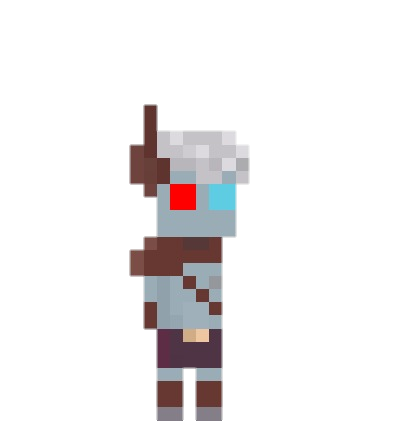
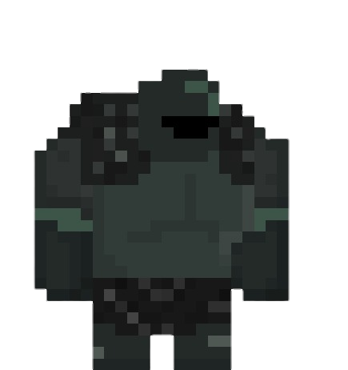

Teracia
Un pueblo deshecho no le quedó tiempo para entrenarte. Solo le quedó invocarte.
Teracia es un RPG táctico por turnos y casilleros: creás tu personaje, elegís su clase y lo mandás a detener a algo que no debería existir. Esta página presenta la demo web gratuita — una aventura corta — y el camino que va a llevar al juego completo a Steam.
Jugar MVPUna fantasía lúgubre, sin ser abrumadora
Teracia solía ser un mundo de civilizaciones muy conectadas con los dioses, tanto que estos anualmente podían invocar un guerrero aleatorio y tiendas que solo reaccionaban a las monedas de los dioses. Pero por culpa de un nigromante ególatra que se hace llamar un dios el mundo ha estado en un gran peligro, ciudades destrozadas y reinos bajo sus pies, pero debido a un descuido de siglos atrás, las personas tienen una última esperanza, tú, el ultimo héroe de esas leyendas.
Este proyecto tiene dos etapas. La primera es esta demo web: un personaje, una aventura corta, jugable gratis desde el navegador. La segunda es el juego completo en Steam, con varias aventuras independientes, ambientadas en épocas distintas, cada una con sus propios enemigos y mecánicas nuevas construidas sobre las mismas reglas base.
Elegís quién sos, no de dónde salís
Al empezar, le das nombre a tu personaje y elegís su clase. La personalización de la demo es simple a propósito — color de piel, color de ojos y el color de la ropa que otorga tu clase — porque lo que define a tu héroe es cómo pelea, no un editor de apariencia interminable.
En la demo viajás solo: no hay compañeros fijos que te acompañen. Cada casilla que te movés y cada ataque que tirás es una decisión enteramente tuya.
Combate por turnos, casilla por casilla
Los combates se juegan en un tablero visto desde arriba. Te movés y atacás por casilleros, y cada habilidad tiene su propio alcance: cuerpo a cuerpo, en línea, en área o a distancia infinita según la clase.
El dado que decide todo
Casi todo en Teracia se resuelve con un D20. El resultado no es solo "pasa o no pasa": define cuánto pasa.
Moverte, tomar un objeto, acciones chicas. Necesitás 10 o más en el D20.
Atacar o usar una acción mayor. Necesitás 15 o más en el D20.
Seis maneras de ser bueno en algo
Cada 5 puntos en un atributo (hasta 10) te dejan pedir un número menos exigente en las tiradas relacionadas.
La regla de tres
Magia, lo sagrado y lo no-muerto se pisan entre sí en un ciclo: cada uno hace el doble de daño al siguiente y recibe la mitad del anterior.
La magia le hace el doble de daño a lo sagrado, lo sagrado el doble a lo no-muerto, y lo no-muerto el doble a la magia — y cada uno recibe la mitad del que tiene detrás en el ciclo.
Heridas que no se van solas
Los efectos de estado se acumulan y condicionan el combate más allá del golpe inicial.
Cada rol pelea distinto
La demo ofrece cinco clases, una por cada rol del sistema. El rol no es solo estética: cambia una regla concreta del combate. Tocá un rol para ver todas las clases de ese rol en el universo de Teracia.
Paladín
- Un escudo reactivo que puede cegar a quien lo ataca
- Descarga: un golpe eléctrico cuerpo a cuerpo
- Castiga a los enemigos que lo evitan en combate
Escudero
- Un escudo con vida propia, inmune a críticos y estados
- Persecución: cierra distancia y golpea en el mismo movimiento
- Puede lanzar el escudo en área y recuperarlo al instante
Bardo
- Sube el dado de daño de un aliado
- Puede dormir o confundir a un enemigo
- Limpia efectos de estado propios o de aliados
Nigromante
- Invoca un alma menor que pelea a su lado
- Puede revivir a un aliado caído
- Un hechizo que golpea toda la escena de combate
Arquero
- Una flecha que golpea hasta tres enemigos a la vez
- Flecha bomba con daño en área
- Un tiro certero que ignora la armadura
Asesino
- Su daga atraviesa armadura durante 2 turnos
- Amplifica su daño según el sangrado acumulado del enemigo
- Puede golpear hasta tres enemigos cuerpo a cuerpo a la vez
Bruto
- Si falla tres veces seguidas, el siguiente golpe es un acierto asegurado
- Puede endurecerse y recibir la mitad del daño por 2 turnos
- O enfurecerse y triplicar su daño por 2 turnos
Caballero
- Su primer golpe aturde 3 turnos
- Puede rebotar de enemigo en enemigo aplastándolos desde el aire
- Su canalización aturde a todos los enemigos a la vez
Devastador
- Si su golpe mata, reparte la mitad de ese daño a otro enemigo al azar
- Un golpe certero le puede dar un segundo ataque inmediato
- Puede inmovilizar a un enemigo para que no se mueva ni contraataque
Héroe
- Invoca una lluvia de espadas sobre cada enemigo
- Su espada evoluciona: daño sagrado, más objetivos y hasta curación por golpe
- Su guantelete empuja, noquea y termina atrapando a un enemigo como escudo
Luchador
- Cambia de estilo — Boxeo, Barijutsu, Muay Thai — cada 3 turnos
- Cada estilo tiene su propio combo, esquive o sangrado
- Su canalización duplica su daño y lo vuelve explosivo por 3 turnos
Penitente
- Al bajar a la mitad de su vida, duplica su daño
- Puede apostar todo a un golpe doble — si falla, el daño lo recibe él
- En su canalización queda a 1 de vida pero gana salvaciones para esquivar
Pillo
- Ataca con números más bajos, aunque a medio daño
- Puede reflejar ataques cuerpo a cuerpo con el doble de daño
- En sigilo, su primer golpe duplica el daño y lo saca del sigilo
Samurái
- Cada golpe dado carga furia; cada golpe recibido la enfría
- A más furia, menos necesita sacar en el D20 para acertar
- Puede invocar fantasmas kamikaze que cargan furia al acertar
Vampiro
- De día duplica su daño; de noche, duplica el que recibe (y viceversa)
- Se cura la mitad del daño que hace con sus armas de sangre
- Puede transformarse en murciélago para volar y esquivar sus debilidades horarias
Verdugo
- Gana vida y daño permanente por cada enemigo que elimina
- Tiene un golpe que ignora inmunidades y buffos enemigos
- Puede debilitar el daño de un rival antes de que ataque
Chamán
- Sus tótems necesitan menos puntería para acertar, aunque tardan un turno más
- Puede crear un tótem escudo que protege a dos aliados
- Puede invertir sus tótems y devolver sus efectos contra el enemigo
Clérigo
- Un rayo que causa daño sagrado y eléctrico a la vez
- Puede salvar a un aliado de la muerte durante 2 turnos
- Su canalización cura a todo el equipo mientras golpea a todos los enemigos
Druida
- Puede transformarse en distintos animales
- Enreda enemigos en espinas venenosas
- Invoca un guardián de raíces y una planta que ataca sola
Hechizero
- Juega cartas de maná, bastones y ataques mágicos según lo que necesite
- Cada carta cuesta más maná cuanto más fuerte es su efecto
- Su canalización golpea cinco veces atravesando toda la armadura
Mago de hielo
- Puede ralentizar o congelar enemigos en área
- Levanta un fuerte de hielo que solo deja pasar ataques a distancia
- Su canalización congela a todos los enemigos y ataca tres veces
Mago de luz
- Un orbe eléctrico que se dispersa entre enemigos
- Puede cegar a todo el campo de batalla por un turno
- Se transforma en serafín y hasta invoca un sol artificial
Mago oscuro
- Ciega con una bola de sombra
- Puede forzar la noche y duplicar sus propias estadísticas
- Roba la sombra de un enemigo para copiar sus estadísticas
Mago
- Genera maná pasivamente con solo no usarlo
- Ataca con seis orbes mágicos a elección
- Su lanza mágica puede atravesar hasta tres enemigos en línea
Monje
- Cada golpe dado carga puntos de curación propios o para aliados
- Tiene una segunda oportunidad si falla un ataque o elimina a un enemigo
- Su canalización lo vuelve inmortal y evita que sus aliados mueran por 2 turnos
Piromántico
- Su bola de fuego pega más fuerte que un ataque normal
- Puede potenciar su fuego a cambio de un poco de su propia vida
- Levanta pilares de fuego que queman a quien se acerque
Titiritero
- Crea títeres que funcionan como un stock de aliados temporales
- Su vida en combate depende de cuántos títeres tiene en mesa
Capitán Pirata
- Puede curarse a sí mismo en pleno combate
- Su cañón tarda en cargar pero perfora armadura
- Su canalización invoca su navío fantasma para una lluvia de disparos
Cazador
- Dispara dardos elementales según lo que necesite la pelea
- Puede colocar dinamita a distancia
- Su canalización invoca una bestia grande que pelea a su lado
Chatarrero
- Sus bombas adhesivas se pegan al enemigo antes de explotar
- Puede sembrar el tablero de trampas que frenan el movimiento
- Su canalización lo mete en una armadura de chatarra con toda su vida disponible
Conquistador
- Gana armadura extra frente a enemigos jefe
- Puede bajarle la armadura al rival de un disparo
- Su canalización carga balas eléctricas extra
Ruiseñor
- Puede volverse invisible y pelear con arco en vez de dagas
- Sus bombas de humo venenoso dificultan los ataques enemigos
- Sus dagas pueden paralizar o quemar al contacto
Tirador Arcano
- Sus flechas mágicas dejan maná acumulado en el suelo
- Puede hacer explotar ese maná para golpear y empujar
- Su canalización cubre una zona entera con flechas mágicas gratis
Vaquero
- Munición limitada a cambio de doble dado de daño
- Puede disparar dos veces gastando una sola bala
- Su canalización con rifle elimina de un tiro a un enemigo común
Alquimista
- Explora el terreno para conseguir ingredientes únicos
- Puede dormir enemigos con un somnífero
- Su canalización reparte veneno a los enemigos y pociones a elección para el equipo
Explorador
- Puede descubrir fortalezas y debilidades del rival
- Le regala un turno extra a un aliado, incluso fuera de su turno
- Combina ceguera con fuego lanzado desde su antorcha
Herrero
- Puede fabricar equipo nuevo explorando en busca de metales
- Encadena enemigos hacia él y los aturde
- Deja trampas de oso que cuesta un turno entero romper
Guardian
- Suma armadura extra con solo plantarse
- Puede purgar sus propias debilidades y volverse inmune a estados por 3 turnos
- Su canalización asegura un golpe que suma toda la vida y armadura que le falta
No hubo tiempo de entrenarte
Un pueblo al borde de perderlo todo te invoca sin ceremonia ni preparación. La única instrucción es simple: frenar a quien está buscando algo que no debería encontrar.
Lo alcanzás por primera vez en un bosque, revolviendo un cofre ajeno. Cuando nota que no está solo, no se queda a pelear él mismo — deja algo más grande en su lugar y se retira. Así se repite, encuentro tras encuentro: un rastro de cofres, un villano cada vez más confiado, y algo que él deja atrás para que vos te encargues.
Cada vez que el heroe gana, recibe Monedas celestes gracias a su poder divino. Gracias a esas monedas se abre una tienda que llevaba cerrada siglos
Hay una tienda en el pueblo que ninguna moneda común puede abrir — solo reacciona a monedas de los dioses. Lo que se desbloquea ahí adentro, y lo que el villano termina haciendo con lo que encuentra, es algo que la demo se guarda para quien la juegue.
Cuatro encuentros, cuatro lecciones
Cada combate de la demo está pensado para enseñar una pieza del sistema antes del enfrentamiento final.

Mago Cazador
No golpea fuerte — te enferma, te duerme y te desgasta poco a poco, rodeado de aliados menores.

Caballero Guardián
Se refugia detrás de su propia armadura mientras un aliado lo cubre.
Monstruo Esquelético
Salta, golpea en área y sangra a quien se acerca demasiado. El más resistente de los tres.
Demonio de Luna
Pelea solo, cambia de comportamiento a medida que pierde vida, y no repite el mismo error dos veces.
Sprites hechos a mano, uno por uno
El arte de Teracia es pixel art original: cada personaje, enemigo, aliado y objeto se dibuja para el tablero de combate visto desde arriba.
La demo es un casillero, no el tablero entero
Demo web
- Gratuita, jugable desde el navegador
- Una aventura corta y un personaje
- Las cinco clases base y las reglas centrales
Teracia en Steam
- Varias aventuras independientes
- Épocas, enemigos y elencos distintos en cada una
- Mecánicas nuevas construidas sobre el mismo sistema